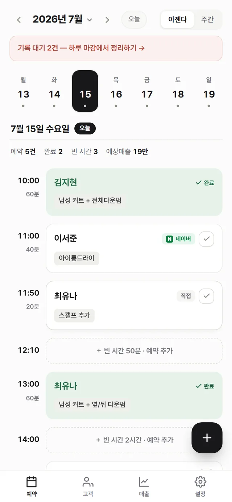
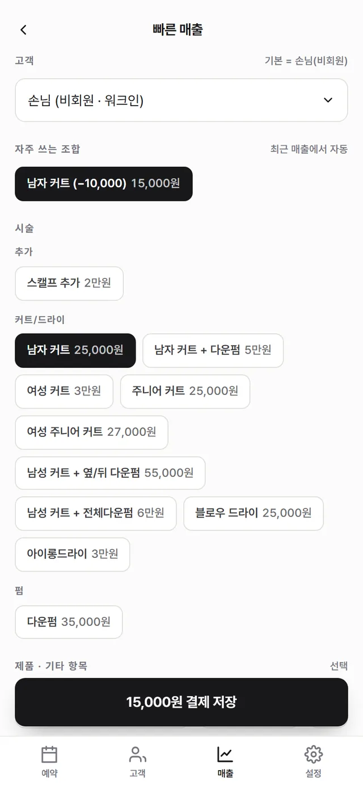
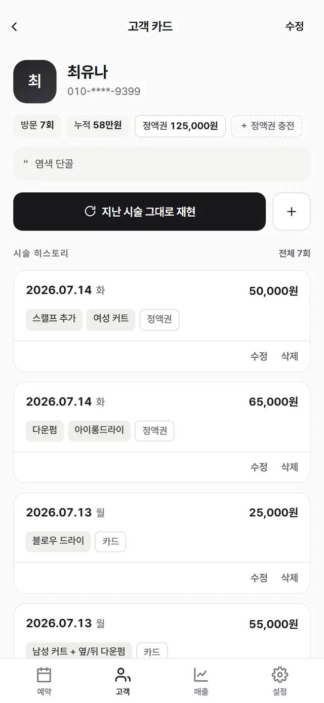

국내에서 가장 많이 쓰이는 미용실 CRM에서 원장이 매출 한 건을 등록하는 과정을 화면 단위로 재구성해봤습니다. 15번이 넘는 인터랙션이 나왔습니다. 같은 일을 세 번의 탭으로 끝내는 CRM을 만들어 실서비스로 올렸고, 그 숫자의 출발점이 된 샵이 지금 첫 파일럿으로 옮겨오는 중입니다. 그 사이의 설계 결정은 전부 감이 아니라 측정된 숫자에서 시작했습니다.
기여도
기획 · 리서치 · 운영 1인 (구현은 AI와 협업)
기간
2026.07 · 출시 후 2주 차 운영 중
벤치마크
매출 등록 15+ → 3 인터랙션
상태
라이브 · 파일럿 샵 온보딩
Overview
이 제품의 사용자는 하루 종일 가위를 잡는 사람입니다. 데스크에 앉아 있을 시간이 없습니다.
1인 헤어샵 원장은 시술자이자 접수원이자 경리입니다. 그런데 이 시장의 1위 CRM은 월 19,900원에 2년 약정으로 파는 PC 시대의 프로그램이고, 중도 해지에는 위약금이 붙습니다. 제가 관찰한 원장님들이 그 제품을 계속 쓰는 이유는 만족이 아니었습니다. 떠나는 데 돈이 들기 때문이었습니다.
저에게는 드문 접근권이 있었습니다. 그 제품을 매일 실제로 쓰는 샵이 화면을 보여주겠다고 한 것입니다. 그래서 기능 아이디어가 아니라 측정 질문에서 시작했습니다 — 지금 쓰는 도구가 원장에게 실제로 얼마나 많은 일을 시키고 있는가?
실측
과업 하나, 지표 하나 — "워크인 손님, 남자 커트, 카드 결제 매출 등록"에 인터랙션이 몇 번 드는가.
탭·클릭 1회 = 1, 텍스트 입력 필드 1개 = 1로 셌습니다. 기존 제품 쪽은 파일럿 샵 실화면 스크린샷을 근거로 흐름을 재구성했고, 이지순지 쪽은 실제로 과업을 완주하며 측정했습니다.
| 제품 | 흐름 | 인터랙션 |
|---|---|---|
| 기존 1위 CRM | 검색 유형 선택 → 검색어 입력 → 검색 → 고객 선택(비회원은 별도 화면 경유) → 시술 선택 ~5탭 → 13열 그리드 입력 → 팝업 2회 → 결제 수단 → 저장 | 15+ (재구성) |
| 이지순지 · 수동 | ① '빠른 매출' ② 시술 '남자 커트' 탭 (고객=비회원 기본, 결제=카드 기본) ③ '25,000원 결제 저장' | 3 (실측) |
| 이지순지 · 프리셋 타일 | ① '빠른 매출' ② 자주 쓰는 조합 타일 탭 — 시술과 할인이 한 번에 적용 ③ 저장 | 3 (실측) |
사라진 12번은 어디로 갔을까요? 기본값 속으로 들어갔습니다. 워크인 손님이 기본이라 검색이 없고, 카드가 기본 결제라 고를 일이 없고, 자주 쓰는 시술·할인 조합은 앱이 학습해 원탭 타일로 만들어 둡니다. 기본값 하나하나가 기존 제품에서는 매번 수행해야 했던 단계 하나를 지웁니다. 여기서의 설계는 더하는 일이 아니라, 원장이 영원히 안 해도 되는 일을 정하는 일이었습니다.
이 숫자는 2026년 7월 15일, 프로덕션 URL에서 리허설 계정으로 재검증했습니다. 두 경로 모두 정확히 세 번째 인터랙션에서 저장 버튼이 활성화됩니다.



히어로 기능을 고른 근거
기존 제품의 메모칸은 30자입니다. 염색 배합은 30자에 들어가지 않습니다.
약제 번호, 산화제 비율, 방치 시간, 지난번에 뭐가 좋았고 뭐가 아쉬웠는지 — 재방문 고객이 실제로 돈을 내는 지식은 이것입니다. 30자에 안 들어가니 원장님들은 CRM 옆에 수첩을 따로 두고, 기록은 두 곳으로 쪼개집니다. 그래서 이 제품의 히어로를 시술 히스토리로 정했습니다. 구조화된 레시피 필드, 전/후 사진, 그리고 다음 방문 때 기록 전체를 미리 채워주는 "지난 시술 그대로 재현" 버튼.
예약과 매출 기능은 이 제품에서 히스토리에 기록을 공급하기 위해 존재합니다. 히어로 하나에 나머지를 보급선으로 붙이는 이 위계는, 아래 지표 설계가 검증하려는 가설이기도 합니다.
무엇을 지표로 삼았나
North Star — 주간 시술 기록 저장 건수, 단 레시피가 포함된 것만.
뻔한 후보들은 기각 사유를 기록하고 버렸습니다. "주간 활성일수"는 습관을 재지만 가치 축적을 재지 못합니다 — 예약만 확인하고 나가도 활성이니까요. "매출 등록 건수"는 장부 대체 여부만 잽니다. 레시피 포함 기록은 이 제품이 증명해야 하는 단 하나 — 구조화된 히스토리가 쌓을 가치가 있다는 것 — 를 재고, 동시에 기존 제품의 정확한 약점(30자 메모)을 공략하는 지표입니다.
DB에 행을 남기지 않는 인터랙션 5종에는 별도 계측을 붙였습니다. 그중 phone_reveal은 "전화번호 마스킹 기본값이 실제 업무를 방해하는가"를 재는 이벤트입니다. 그리고 규칙을 하나 정해뒀습니다 — 4주 차에 숫자가 다음 기획을 결정한다. 프리필 사용이 0건이면 히어로 동선은 변호가 아니라 재설계 대상입니다.
포지셔닝
월 9,900원, 무약정. 이 가격은 할인이 아니라 제품 결정입니다.
기존 제품의 2년 약정이 작동하는 이유는 갈아타기가 위험하게 느껴져서입니다. 그래서 반대 포지션은 "더 싸다"가 아니라 "잃을 게 없다"로 잡았습니다 — 절반 가격, 아무 달에나 떠날 수 있고, 기존 도구에서 실제로 내보낼 수 있는 마스킹된 번호 그대로 받아주는 임포터까지. 9,900원은 심리적 1만 원 선 아래에 있으면서 1인 운영 서비스를 지속할 수 있는 숫자입니다. 의도적으로 포기한 것은 약정이 보장하는 매출이고, 거는 것은 잠그지 않아도 남는 제품입니다.
아래 한계에도 다시 적었지만 정직하게 — 아직 아무도 결제하지 않았습니다. 이 포지셔닝은 파일럿 전환으로 검증을 기다리는 설계된 가설입니다.
파일럿 — 피드백이 기능이 되는 속도
첫 파일럿은 이 프로젝트를 시작하게 한 바로 그 샵 — 지금도 기존 제품에 돈을 내고 있는 곳입니다. 인터뷰는 의향이 아니라 과거 행동만 묻고("지난 화요일 마감은 어떻게 하셨어요?"), 들은 것은 기능으로 배송됩니다.
먼저 말해두는 한계
헤드라인 숫자는 진짜입니다. 다만 그 숫자가 어떻게 만들어졌는지는 정확히 알고 보셔야 합니다.
라이브
운영 중인 실서비스입니다 — 그래서 링크에는 로그인이 필요합니다.
로그인 뒤에는 실제 고객 데이터가 있어서, 위 스크린샷은 가상 고객으로 채운 리허설 계정에서 찍었습니다. 계정 없이 볼 수 있는 공개면은 샵마다 발급되는 손님용 링크예약 페이지입니다. Next.js와 Supabase로 만들어 PWA로 설치되고, 첫 2주 동안 95커밋 — 대부분이 파일럿 샵의 마지막 한마디가 정한 것들입니다.
이지순지 보러 가기 →